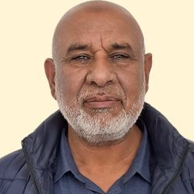
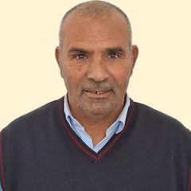
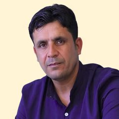
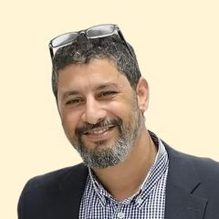
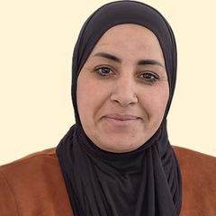
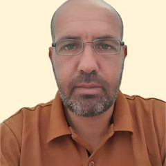

رؤيتنا
نسعى إلى مستقبل تزدهر فيه المجتمعات البدوية في النقب، وتحافظ على ثقافتها الفريدة وتحقق تطلعاتها. نريد أن تُخطَّط القرى وتُبنى وفقًا لقوانين التخطيط والبناء في الدولة، وأن تُستخدم الأرض لتنمية اقتصادية مستدامة تستند أيضًا إلى التقاليد والثقافة البدوية. نعمل كي يتمتع جميع المواطنين البدو في النقب بوصول متساوٍ إلى خدمات الدولة ومواردها، وبمشاركة كاملة في الحياة الديمقراطية، مثل أي مواطن آخر.
مواضيع ومشاريع
لكل موضوع صفحة خاصة به، مع المعطيات والوثائق
أهدافنا
الاعتراف
اعتراف رسمي من الدولة بالقرى البدوية
تخطيط نابع من المجتمع
مخططات تحافظ على بنية القرى وتقاليدها المحلية، مع أراضٍ لكسب الرزق
قيادة محلية
تأهيل قيادات وتعزيز قدرات السكان في التعليم والرفاه والتشغيل والمرافعة
وقف التمييز
خدمات حكومية متاحة، وقف هدم البيوت وإنهاء مصادرة الأراضي
دعم جماهيري
العمل مع قادة الرأي وصنّاع القرار لتوسيع الدعم للاعتراف بالقرى
تضامن
توحيد المجتمعات البدوية في النقب للعمل المشترك من أجل تحسين ظروف الحياة في القرى
طاقم المجلس






مجلس الإدارة: سلامة الأعسم، موسى الهواشلة، موسى أبو بنيه، علي أبو سبيلة، محمد أبو قويدر، جمعة طنطاوي، لباد أبو عفاش
اتصل بنا
الصحفيون والباحثون وكل من يرغب في زيارة القرى: تواصلوا معنا مباشرة